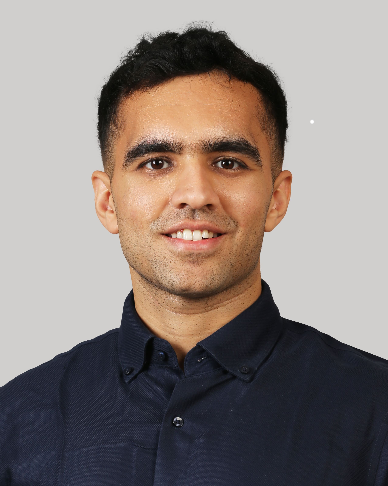

I develop scalable numerical methods and PDE solvers for high-performance computing, and build the production C++/Python simulation software and machine-learning methods — neural operators, differentiable solvers — that make them useful on real physical systems.
I'm a research scientist working at the intersection of numerical methods and machine learning for physical systems. I'm currently a postdoctoral researcher in the SOLARIS Lab at Johns Hopkins University, where I build neural-operator surrogates and differentiable PDE solvers for fluid dynamics.
At Johns Hopkins I train neural-operator surrogates — FNOs and DeepONets — across ten PDE systems, and train closed-loop neural control policies by backpropagating through differentiable Navier–Stokes solvers for 3D turbulent channel flow. Backpropagating through 500-step autoregressive rollouts without gradient blow-up, these policies outperform RL-PPO by 1–3 orders of accuracy on noisy, out-of-distribution initializations where classical MPC was intractable.
Before this, I split my PhD between Imperial College London and the McLaren F1 Team, where I designed a preconditioner for dense, ill-conditioned high-order FEM operators that accelerated 3D simulation by 40% and scaled algebraic multigrid to 100M-element matrices across 10,000+ MPI ranks on national HPC. At McLaren I industrialized the research solver Nektar++ into the team's production pipeline for unsteady 3D simulation — the first such deployment in Formula 1.
I care about open-source scientific software: I'm a core contributor to Nektar++, the open-source spectral/hp element framework, and to NeuroMANCER, PNNL's differentiable-programming and scientific-ML library, where I introduced neural-operator support via five merged pull requests.
My work spans journal articles, peer-reviewed proceedings, and conference talks in CFD, HPC, and machine learning — from turbulence-model augmentation to preconditioning for spectral/hp element methods. Full list on Google Scholar.
New preconditioner for the core high-order FEM solver, targeting scalable pressure-Poisson and incompressible-flow simulations, with high-to-low-order discretization mappings and support for tetrahedral/prismatic elements.
Added native support for Fourier Neural Operators and DeepONets to PNNL's differentiable-programming library, including operator-specific losses, training/validation support, tests, and scientific examples.
Modernized PETSc integration and build infrastructure across Nektar++ to support newer and externally installed PETSc configurations.
Open to research scientist and postdoc roles from October 2026 — based in New York City, always happy to talk numerical methods, scientific ML, or open-source scientific software.